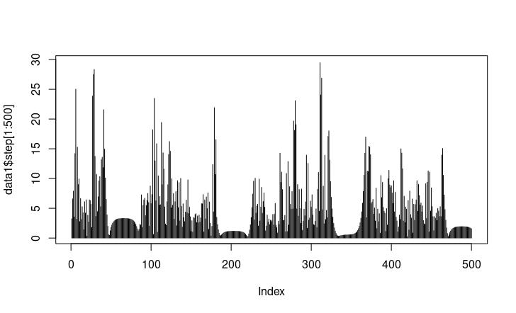

Modeling Stochastic Processes in Ecology
Doctoral Qualifying Exam by Fabiana FerracinaMay 5th, 2021
Presentation Sections
- Intro: Problems in Statistical Ecology
- Hierarchical Species Distribution Modeling
- Case Study: Oceanic Whitetip Shark Distribution
- Hidden Markov Models
- Case Study: Ontogeny of Bald Eagle Behavior
- Conclusion and Next Steps
Intro: Problems in Statistical Ecology
- Species Distribution Modeling
- Quantifying Biodiversity
- Population Dynamics
- Animal Movement
- Citizen Science Data
Hierarchical Species Distribution Modeling

Inhomogeneous Poisson Point Process
$$\log L (\lambda; \mathbf{U}) = \sum\limits_{i=1}^n \log \lambda (\mathbf{s}_i, t_i) - \int\limits_{\mathcal{A}}\int\limits_0^T \lambda(\mathbf{s},t) dtd\mathbf{s} - \log(n!)$$
The probability that the number of points $> 0 \sim$ Bernoulli$(1-e^{-\bar{\lambda}})$
Case Study: Oceanic Whitetip Shark Distribution
Shark Presence Data
Ocean Biodiversity Information SystemOcean Climate Data

GLM
Maxent
Metropolis-Hastings
Hidden Markov Models
Hidden Markov Models
Given a sequence of observations, an HMM assumes that there is a hidden process behind them. Each observation at a given time is emitted via some distribution given a hidden state, and the observations are independent of each other. The hidden process has the Markov property, i.e. the state at time $t$ only depends on the state at time $t-1$.Hidden Markov Models
Definition
The discrete-time finite state HMM is completely defined as follows:- Number of states, $K$, i.e. latent patterns of interest.
- Transition probability matrix $\Gamma$, for the hidden states $X$: $P(X_t = j | X_{t-1} = i)$ for $i,j \in \{1, \dots, K\}$.
- State-dependent distributions for the observations $Y$ that stem from the latent states: $f(Y_t|X_t = k) \Rightarrow$ any valid distribution function.
- Initial state distribution, $\delta$, i.e. the first pattern exhibited: $P(X_1 = k)$.
Case Study: Ontogeny of Bald Eagle Behavior
Telemetry Data
Data from 10 tagged bald eagles from the Great Plains of the United States, followed from 2016-2020.
Dataset contains 3,313,548 position readings.
Variables: animal id, date, latitude, longitude, speed, heading, altitude, battery power, differences in time, distance and altitude from previous position fix, and binned fix rate.
Question: Given these data, can we detect how the eagles’ behaviors differ based on their age?
State-Dependent Distributions
$$\begin{align*} L_t | X_t = j &\sim \mathrm{Gamma}(\alpha_j, \beta_j)\\ \phi_t | X_t = j &\sim \mathrm{von Mises}(\mu_j, \kappa_j) \end{align*}$$
Covariates and Transition Probabilities
Covariates, such as environmental factors, tree cover, distance to water bodies - or in the case my model at this time speed in km per hour, altitude and heading - are incorporated into the transition probabilities $\gamma^{(t)}_{ij}$ via the multinomial logistic link function:
$$\begin{align*}\gamma^{(t)}_{ij} &= \frac{\exp(\eta_{ij})}{\sum_{k=1}^N\exp(\eta_{ik})}, \\ \\ \mathrm{where} \ \eta_{ij} &= \begin{cases}\beta_0^{(ij)} + \sum_{l=1}^p \beta_l^{(ij)}\omega_l^t & \mathrm{if} \ i \neq j \\ 0 & \mathrm{otherwise}\end{cases}.\end{align*}$$
Stats Cauldron
RStan Stove
Results
Age Differences (yet to be explored...)

Conclusion and Next Steps
- Continue work with the bald eagle data and identify 4-5 flight modes.
- Use of environmental and landscape variables as covariates.
- Hyperparameters to model differences between birds.
- State decoding in order to determine the underlying state sequence that led to the observed data.
Hierarchical Hidden Markov Model
Topological Data Analysis
Topology, the study of shape, can produce more explainable models: data has shape.
For example, an atmospheric river is a long narrow high-moisture filament, resembling a river in many ways including their shape.
Thank you! Questions?